We listed the most important veggies.
We listed the most important veggies. 

A
Artichoke
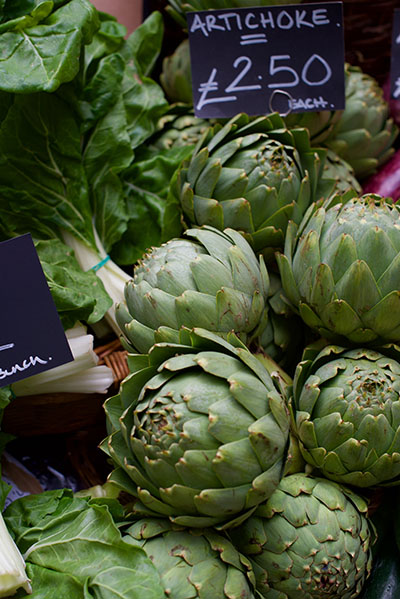
Photo by Judy Lamont on Unsplash
Asparagus
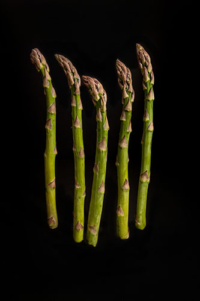
Photo by Keegan Houser on Unsplash
Aubergine
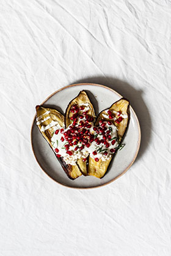
Photo by Alex Loup on Unsplash
B
Beetroot
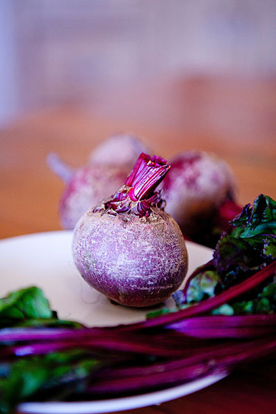
Photo by Natalia Fogarty on Unsplash
Broccoli
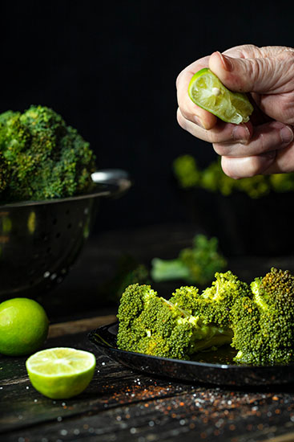
Photo by Hessam Hojati on Unsplash
Brussels Sprouts

Butternut Squash

C
Carrots
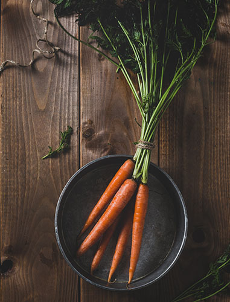
Photo by Mae Mu on Unsplash
Cabbage
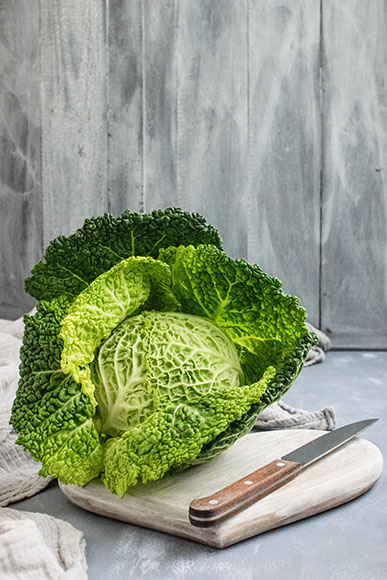
Photo by Monika Grabkowska on Unsplash
Cauliflower
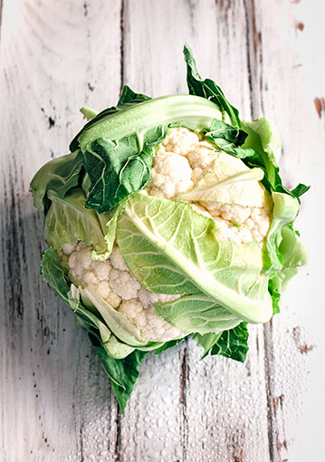
Photo by Jennifer Schmidt on Unsplash
Celery
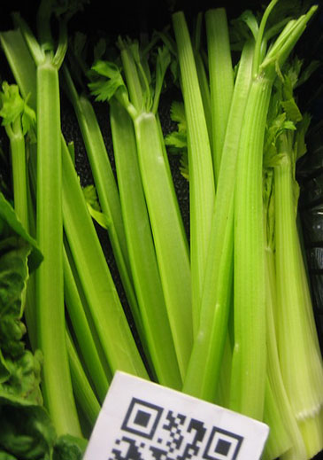
by bon_here is licensed under CC BY-NC 2.0
Corn
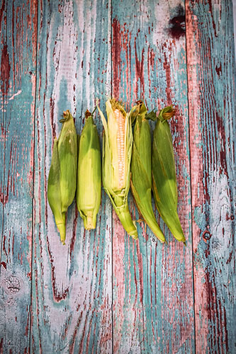
Photo by Kristen Kaethler on Unsplash
Cucumber
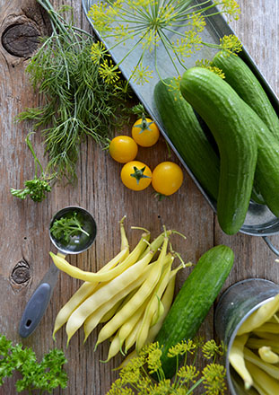
Photo by Nadine Primeau on Unsplash
D
Dandelion Greens

E
Eggplant
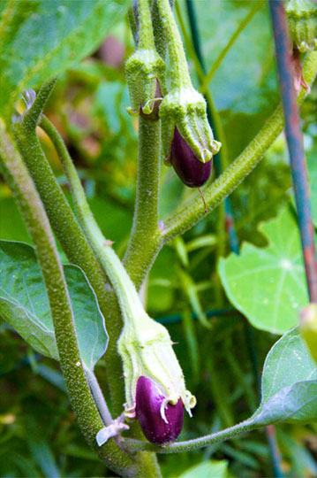
by Kathleen Farley is licensed under CC BY-NC-SA 2.0
F
Fennel
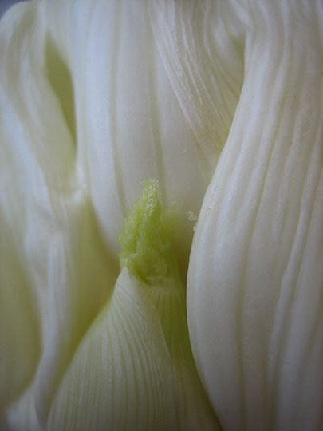
by Andrew Huff is licensed under CC BY-NC 2.0
G
Garlic
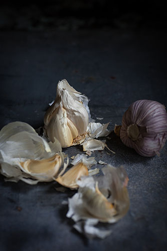
Photo by Heather Gill on Unsplash
Green Beans

H
Horseradish
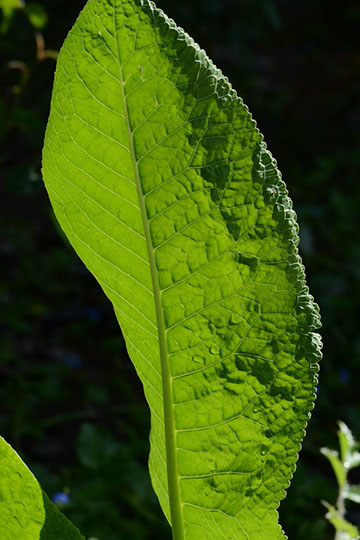
by tracie7779 is licensed under CC BY-SA 2.0
I
Iceberg Lettuce

J
Jicama
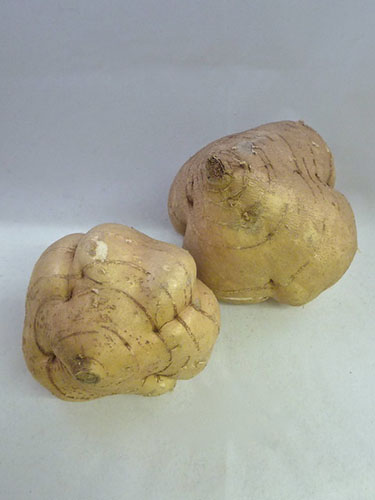
by kattebelletje is licensed under CC BY-NC 2.0
K
Kale
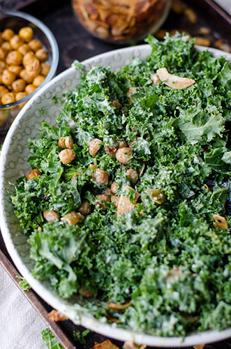
Photo by Deryn Macey on Unsplash
L
Leeks
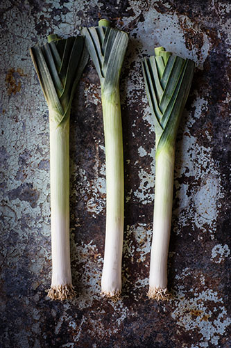
Photo by Heather Gill on Unsplash
Lettuce

M
Mushrooms
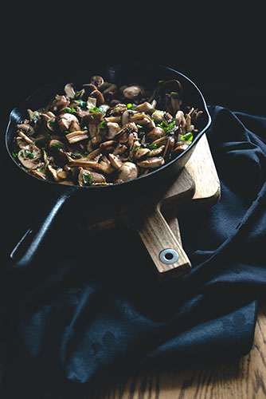
Photo by Sébastien Marchand on Unsplash
N
Napa Cabbage

O
Onion

P
Parsnips

Peppers

Potatoes

Pumpkin

R
Radish

Rhubarb

S
Spinach

Sweet Potatoes

T
Turmeric

Turnip

W
Watercress

Y
Yam

Z
Zuchinni